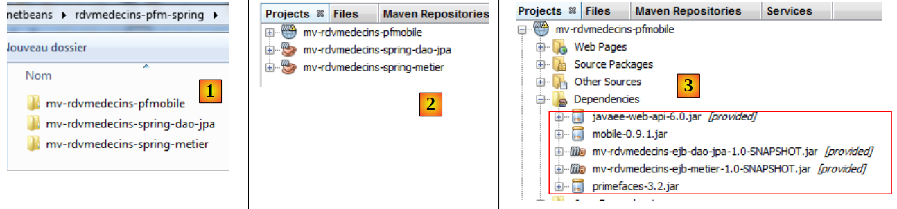
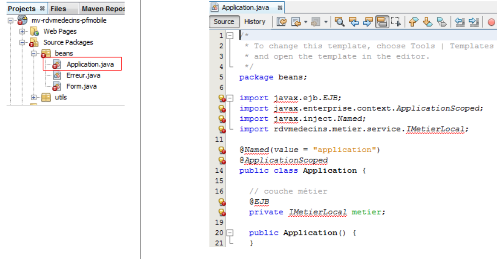
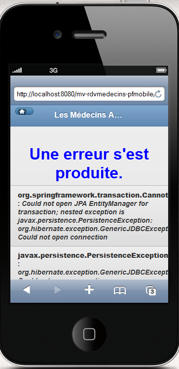
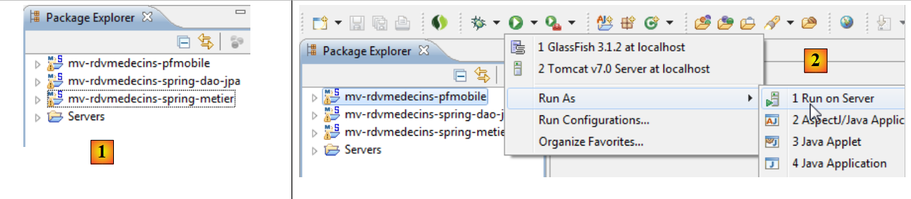
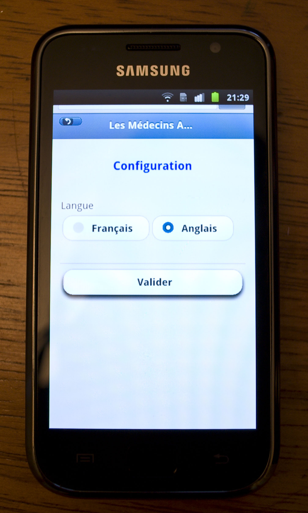

10. مثال على التطبيق-06: rdvmedecins-pfm-spring
10.1. النقل
سنقوم الآن بنقل التطبيق السابق إلى بيئة Spring/Tomcat:
 |
سنعتمد على تطبيقين تمت كتابتهما بالفعل. سنستخدم:
- طبقتي [DAO] و[JPA] من الإصدار 02 JSF / Spring،
- طبقة [web] / Primefaces Mobile من الإصدار 05 PFM / EJB،
- ملفات تكوين Spring من الإصدار 02
هنا، نقوم بمهمة مشابهة لتلك التي تم القيام بها لنقل تطبيق JSF2 / EJB / Glassfish إلى بيئة JSF2 / Spring Tomcat. لذلك، سنقدم تفسيرات أقل. إذا لزم الأمر، يمكن للقارئ الرجوع إلى ذلك النقل.
نضع جميع المشاريع اللازمة لعملية النقل في مجلد جديد [rdvmedecins-pfm-spring] [1]:
 |
- [mv-rdvmedecins-spring-dao-jpa]: طبقات [DAO] و[JPA] لإصدار JSF/Spring 02،
- [mv-rdvmedecins-spring-metier]: طبقة [business] من الإصدار 02 JSF / Spring،
- [mv-rdvmedecins-pfmobile]: طبقة [web] من PrimeFaces Mobile / EJB الإصدار 05،
- في [2]، نقوم بتحميلها في NetBeans،
- في [3]، لم تعد تبعيات مشروع الويب صحيحة:
- يجب تغيير التبعيات على طبقات [DAO] و[JPA] و[business] لتستهدف الآن مشاريع Spring؛
- قدم خادم GlassFish مكتبات JSF. لم يعد هذا هو الحال مع خادم Tomcat. لذلك يجب إضافتها إلى التبعيات.
يتطور مشروع [الويب] على النحو التالي:
 |
يحتوي ملف [pom.xml] الخاص بطبقة [الويب] الآن على التبعيات التالية:
<dependencies>
<dependency>
<groupId>org.primefaces</groupId>
<artifactId>primefaces</artifactId>
<version>3.2</version>
<type>jar</type>
</dependency>
<dependency>
<groupId>org.primefaces</groupId>
<artifactId>mobile</artifactId>
<version>0.9.1</version>
<type>jar</type>
</dependency>
<dependency>
<groupId>com.sun.faces</groupId>
<artifactId>jsf-api</artifactId>
<version>2.1.8</version>
</dependency>
<dependency>
<groupId>com.sun.faces</groupId>
<artifactId>jsf-impl</artifactId>
<version>2.1.8</version>
</dependency>
<dependency>
<groupId>${project.groupId}</groupId>
<artifactId>mv-rdvmedecins-spring-dao-jpa</artifactId>
<version>${project.version}</version>
</dependency>
<dependency>
<groupId>${project.groupId}</groupId>
<artifactId>mv-rdvmedecins-spring-metier</artifactId>
<version>${project.version}</version>
</dependency>
</dependencies>
تظهر أخطاء. وهي ناتجة عن مراجع EJB في طبقة [web]. دعونا أولاً نفحص حبة [Application]:
 |
نقوم بإزالة جميع الأسطر التي تسبب أخطاء بسبب الحزم المفقودة، ونعيد تسمية واجهة [IMetierLocal] إلى [IMetier] (وهذا هو اسمها في طبقة [business] في Spring)، ونستخدم Spring لإنشاء مثيل لها:
package beans;
import java.util.ArrayList;
import java.util.List;
import org.springframework.context.ApplicationContext;
import org.springframework.context.support.ClassPathXmlApplicationContext;
import rdvmedecins.metier.service.IMetier;
public class Application {
// business layer
private IMetier metier;
// errors
private List<Erreur> erreurs = new ArrayList<Erreur>();
private Boolean erreur = false;
public Application() {
try {
// instantiation layer [business]
ApplicationContext ctx = new ClassPathXmlApplicationContext("spring-config-metier-dao.xml");
metier = (IMetier) ctx.getBean("metier");
} catch (Throwable th) {
// we note the error
erreur = true;
erreurs.add(new Erreur(th.getClass().getName(), th.getMessage()));
while (th.getCause() != null) {
th = th.getCause();
erreurs.add(new Erreur(th.getClass().getName(), th.getMessage()));
}
return;
}
}
// getters
public Boolean getErreur() {
return erreur;
}
public List<Erreur> getErreurs() {
return erreurs;
}
public IMetier getMetier() {
return metier;
}
}
- السطران 20-21: إنشاء مثيل لطبقة [business] من ملف تكوين Spring. هذا هو الملف الذي تستخدمه طبقة [business] [1]. نقوم بنسخه إلى مشروع الويب [2]:
 |
- السطور 22-31: نتعامل مع أي استثناءات ونخزن تتبع المكدس الخاص بها في الحقل الموجود في السطر 14.
وبذلك، لم يعد لدى حبة [Application] أي أخطاء. لنلقِ نظرة الآن على حبة [Form] [1]، [2]:
 |
|

نقوم بإزالة جميع الأسطر الخاطئة (عمليات الاستيراد والتعليقات التوضيحية) الناتجة عن الحزم المفقودة، ونقوم بتغيير اسم واجهة [ImetierLocal] إلى [IMetier]. وهذا يكفي لإزالة جميع الأخطاء [3].
بالإضافة إلى ذلك، نحتاج إلى إضافة دالتي getter و setter للحقل
// bean Application
private Application application;
بعض التعليقات التوضيحية التي تمت إزالتها من حبوب [Application] و[Form] كانت تعلن عن الفئات كحبوب ذات نطاق محدد. والآن، يتم إجراء هذا التكوين في ملف [faces-config.xml] التالي [4]:
<?xml version='1.0' encoding='UTF-8'?>
<!-- =========== FULL CONFIGURATION FILE ================================== -->
<faces-config version="2.0"
xmlns="http://java.sun.com/xml/ns/javaee"
xmlns:xsi="http://www.w3.org/2001/XMLSchema-instance"
xsi:schemaLocation="http://java.sun.com/xml/ns/javaee http://java.sun.com/xml/ns/javaee/web-facesconfig_2_0.xsd">
<application>
<!-- message file -->
<resource-bundle>
<base-name>
messages
</base-name>
<var>msg</var>
</resource-bundle>
<message-bundle>messages</message-bundle>
<default-render-kit-id>PRIMEFACES_MOBILE</default-render-kit-id>
</application>
<!-- the applicationBean bean -->
<managed-bean>
<managed-bean-name>applicationBean</managed-bean-name>
<managed-bean-class>beans.Application</managed-bean-class>
<managed-bean-scope>application</managed-bean-scope>
</managed-bean>
<!-- the bean form -->
<managed-bean>
<managed-bean-name>form</managed-bean-name>
<managed-bean-class>beans.Form</managed-bean-class>
<managed-bean-scope>session</managed-bean-scope>
<managed-property>
<property-name>application</property-name>
<value>#{applicationBean}</value>
</managed-property>
</managed-bean>
</faces-config>
تم الانتهاء من إعداد المنفذ. يمكننا الآن تجربة تشغيل تطبيق الويب.
 |
نترك للقارئ مهمة اختبار هذا التطبيق الجديد. يمكننا تحسينه قليلاً للتعامل مع الحالة التي تفشل فيها تهيئة حبة [Application]. نعلم أنه في هذه الحالة، تمت تهيئة الحقول التالية:
// erreurs
private List<Erreur> erreurs = new ArrayList<Erreur>();
private Boolean erreur = false;
يمكن معالجة هذه الحالة في طريقة init الخاصة بـ [Form] bean:
@PostConstruct
private void init() {
// was the initialization successful?
if (application.getErreur()) {
// retrieve the list of errors
erreurs = application.getErreurs();
// the error view is displayed
setForms(false, false, true);
}
// caching doctors and customers
...
}
- السطر 5: إذا فشل تهيئة حبة [Application]،
- السطر 7: استرجع قائمة الأخطاء،
- السطر 9: وعرض صفحة الخطأ.
وبالتالي، إذا أوقفنا نظام إدارة قواعد البيانات MySQL وأعدنا تشغيل التطبيق، فسنرى الآن الصفحة التالية:

10.2. الخلاصة
أثبت نقل تطبيق PrimeFaces Mobile/EJB/GlassFish إلى بيئة PrimeFaces Mobile/Spring/Tomcat أنه أمر بسيط. لا تزال مشكلة تسرب الذاكرة التي تم الإبلاغ عنها في دراسة تطبيق JSF/Spring/Tomcat (القسم 4.3.5) قائمة. وسيتم حلها بنفس الطريقة.
10.3. الاختبارات باستخدام Eclipse
نقوم باستيراد مشاريع Maven إلى Eclipse [1]:
 |
نقوم بتشغيل مشروع الويب [2].
 |
نختار خادم Tomcat [3]. ثم تُعرض الصفحة الرئيسية للتطبيق في المتصفح الداخلي لبرنامج Eclipse [4].
10.4. الاختبار على جهاز محمول
لاختبار التطبيق على جهاز محمول، اتبع الخطوات الموضحة في القسم 8.5.6. فيما يلي بعض لقطات الشاشة للتطبيق:
 |  |
 |  |